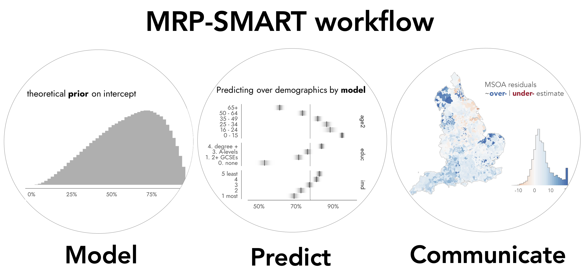

MRP-SMART
Estimating place-based and cross-sectional financial outcomes from everyday transactions
Background / Summary
(500 words)

Summary
MRP-SMART is a collaboration between Financial (FINDS) and the Healthy and Sustainable Places (HASP) Data Services. The project will generate a collection of datasets estimating the financial outcomes of populations from individual-level banking and financial records. It will do so by applying Multilevel Regression and Poststratification (MRP) (Gelman and Little 1997), a technique for small area estimation (SAE) little-used outside of Political Polling, but with obvious potential for addressing issues of representativeness in smart data research.
The primary output is a suite of datasets describing the financial outcomes of populations living in UK neighbourhoods. MRP-SMART will incorporate these estimates into FINDS’ existing tools, such as the Economic Wellbeing Explorer dashboard. Since MRP-SMART uses a fully-Bayesian modelling approach, estimates for different combinations of area-level and demographic subsets can be straightforwardly derived and for each point estimate, uncertainty ranges in the natural units of the outcome. Such uncertainty information has material benefits for evidence-based policy-making, in that estimates are framed in a concrete, intuitive and policy-relevant way. MRP-SMART will incorporate empirically-backed uncertainty representation techniques (e.g. Franconeri et al. 2021) for encoding modelled data into the Economic Wellbeing Explorer dashboard, accompanied by data stories that explain how the MRP-based estimates can be used to assist decision-making.
A secondary outcome is the methodological framework: MRP-SMART will curate documented code repositories and open source packages that lower the barrier to entry to MRP applied to smart data research. This will build capacity across the network by enabling smart data researchers to generate MRP-derived place-based estimates of other outcomes, such as mobility, health and wellbeing.
Why MRP for simulating public outcomes and behaviours?
In social research, samples from surveys are routinely used to estimate the characteristics of a population – levels of financial distress, dietary and physical activity, pro-environmental attitudes. With enough sample, we can directly estimate the prevalence of target outcomes at subnational (regional) level. If we want to look at smaller-scale geographies – in the UK, the 32.8k LSOA neighbourhoods which tend to really discriminate social outcomes – direct estimation soon fails and we must turn to model-based approaches, or small area estimation (SAE).
In MRP, the outcome of interest is first modelled (MR) from the survey / microdata using a range of individual (respondent) demographics and group (area-level) context variables. Next, a ‘poststratification frame’ is constructed, whereby, for every small-area unit the analyst wishes to estimate over, joint counts are derived from Census or other administrative data for the different demographics and area-level variables used in the model. At poststratification (P), predicted probabilities of the outcome are extracted from the model for each row of the postsratification frame. Multiplying these probabilities by the joint counts, we can estimate the extent that the target outcome occurrs in the small-area.
The key advantage of MRP is in its use of Bayesian multilevel models. It is common in SAE that certain demographic combinations have little or no representation in the sample data, especially when some additional geographic constraint is added. In these cases, the model uses information from related groups to make more accurate estimates, known as partial pooling. In a famous example, Gelman et al. (2016) used MRP on a succession of highly unrepresentative polls of Xbox customers, and documented how Xbox-derived forecasts of 2012 US presidential were in-line with those of leading pollsters using large-scale and traditionally sampled surveys. A second, related, advantage of the Bayesian approach is that full posterior distributions are generated for each prediction, and predictions can be made for any combination of demographics and area-level variables. This means we can report interpretable indicators of the uncertainty around an estimate for any spatial unit and demographic combination.
Why MRP for FINDS (and HASP)?
The FINDS data service works with full bank transaction records of over 5 million UK-based customers, and from here derives a set of financial ‘health’ indicators of those customers: people with persistently overdrawn accounts, living beyond their means, with low emergency resilience, as well as median weekly income. These indicators are presented to policy-makers and service providers via an interactive web-based dashboard, the Economic Wellbeing Explorer. This allows users to subset the data by geography, demographics and financial indicators. While 5 million customers is undoubtedly a large dataset, it is not a representative or probabilistic sample. If the ambition is to describe the likely financial outcomes of sub-populations – demographic and neighbourhood-level – then there is no guarantee that the customers monitored in that area accurately reflect the financial health of all residents. A related point: since the tool uses direct estimation, data are currently aggregated to a minimum level of Intermediate Zone (MSOA) and by highly aggregated age ranges (18-39,40-69, 70+). The sample becomes surprisingly small, unreliable and potentially disclosive when subset by combinations of demographics and area-level variables.
As a principled, and empirically validated approach to correcting for bias in non-representative samples, MRP-based estimates would be a significant addition to FINDS the Economic Wellbeing Explorer tool, but also to the wider Smart Data network. In addition to work with FINDS, this project will contribute resources and tools that will enable other smart data researchers to apply MRP to their own behavioural datasets. Of immediate benefit would be HASP – generating place-based estimates of other outcomes from observational datasets on mobility (First Bus, Mobilityways), health (e.g.) and wellbeing (e.g.).
Project team
Roger Beecham, University of Leeds (HASP). Roger is experienced in MRP and Bayesian modelling, and is an international expert in uncertainty visualization and analysis (e.g. Beecham 2025). Roger will guide Smart Data Foundry (SDF) data scientists in building MRP models, deriving population estimates from FINDS data and incorporating visualization techniques for their representation in the Economic Wellbeing Explorer dashboard. He will develop code, open source packages and repositories for implementing MRP, aimed at the wider Smart Data Research network, a practice for which he has sustained track-record (e.g. Beecham, Tennekes, and Wood in press).
2x Data Scientists at Smart Data Foundry (FINDS). Data scientists at SDF specialise in data pipelines and front-end tool development. Both will work under Roger’s guidance to implement the MRP models and generate predictions for different demographic and small area combinations. The data scientists and Roger will also develop the Economic Wellbeing Explorer tool, incorporating uncertainty encoding techniques into the modelled estimates.
1x Communications and Marketing Officer at Smart Data Foundry (FINDS). …
Aims and objectives
(200 words)
Outline how the proposal will support delivery of SDR UK’s objectives, including alignment to programme priorities.
The project supports SDR UK objectives insofar as it aims to:
1. Build capability in smart data research by addressing methodological and quality challenges
MRP is a principled way of correcting for bias in non-representative samples. Bringing MRP outside of the political polling use case, and applying to behavioural rather than sampled survey data, is an exciting prospect. The project will develop fully-documented and transferable code, using open-source packages, for MRP implementation. In doing so, it will enable others in the Smart Data Research network to to generate place-based and population-level estimates from other behavioural datasets, such as mobility, health and wellbeing.
2. Promotes trustworthy and responsible use of sensitive data
Each data point generated through the project will be a modelled value, with full uncertainty ranges, rather than a direct estimate from a sample. This means that the estimates are not disclosive of individuals, and there are obvious benefits to enabling access to these and other MRP-derived estimates from smart data. Coupled with our use of cutting-edge techniques for uncertainty representation, the project will demonstrate how uncertainty reasoning can be made intrisic to smart data products.
3. Generates high-impact data products that enhance existing data assets
The datasets, estimating unknown financial outcomes at neighbourhood and cross-sectional level, will be a novel resource for analysts and policy-makers alike. The project will champion public engagement in these data products via data stories and visualization tools, built into FINDS’ existing Economic Wellbeing Explorer dashboard.
Expected outputs and deliverables
(200 words)
The project will deliver three key outputs:
1. Data products
Estimates of population-level financial outcomes, published over a range of area-level and demographic cross-section dimensions and with full uncertainty ranges for each point estimate. These data products will be administered on SDF servers.
2. Code products
Reproducible and transferable code products for implementing and validating MRP estimates derived from smart data. In addition to generalisable and transferable code, for each published data product, we will document the model-building process in full, including decisions made around variable selection and model parameterisation, in constructing post-stratification frames.
3. Data stories and visualization designs
Implemented in the Economic Wellbeing Explorer dashboard, the project will generate data stories and cutting edge visualization encodings, that explain how MRP-based estimates are generated, assist their reliable interpretation.
Expected impact
(200 words)
Impact on SDR UK Research Themes
1. Productivity and Prosperity
The data products provide a unique profile of financial distress at the small-area community level. These datasets will be a valuable resource for governments and service providers to design policy and implementations to monitor and tackle inequality.
2.Sustainability
The code products have the potential to impact each of the SDR UK themes, as they enable researchers to generate MRP-derived estimates of a range of outcomes. As part of a separate project, INFUZE, Beecham and colleagues will apply learning from SMART-MRP on behavioural datasets collected from First-Bus and mobilityways, to be administered on HASP, in order to simulate neighbourhood-level mobility behaviours and opinions. This will enable learning and aid design of services that help transition to more sustainable mobility behaviours.
Impact on SDR UK Data Service Objectives
1. Safe access and responsible use of smart data for research
Since every data point is a modelled estimate, with uncertainty ranges, non-disclosure of sensitive information is guaranteed. The application of cutting edge techniques for communicating model uncertainty (e.g. Franconeri et al. 2021) in the estimates, as well as the explanatory data stories, will promote reliable and trustworthy interpretation of the data products by policy-makers and other researchers.
2. Building capability across the research community
Incorporating MRP-derived estimates into FINDS and the Economic Wellbeing Explorer is a significant outcome, and addresses a current limitation in how financial outcomes are reported and therefore can be used by policy-makers. A key aspect of the project is the exchange of expertise between FINDS and HASP. Bit in developing transferable code products, the project will lower the barrier to entry to MRP for researchers across the SDR UK network.
3. Ground-breaking methods in smart data research
The project brings MRP out of the political polling, and survey research, tradition. There is strong evidence that MRP provides a methodological framework for addressing issues of bias and representation when using smart data for social research. This project therefore hits the core of SDR UK’s mission and has the the potential to open up the smart data research field.
Total cost and justification of resources
(300 words)
TODO: FINDS data scientist time? FINDS marketing and communications time?
The project will run for 9 months, starting in January 2026 and ending in September 2026. Work will be orgaised into three phases.
Phase 1: MRP model development and validation (3 months, Jan-Mar 2026)
The first three months concentrates on modelling via MRP a FINDS financial outcome, for example median weekly income. RB will advise SDF data scientists in making principled decisions around model structure, variable inclusion, and especially incorporating area-level context variables. A challenge with MRP implementation is constructing a poststratification frame on which modelled probabilities are re-weighted; common practice is to estimate marginal counts in poststratification frames where demographic and area-level combinations that are not contained in Census releases (Hanretty 2019). As an expert in geospatial analysis, and with prior experience in generating poststratification frames, RB will supply these datasets and share learning with SDR data scientists on postratification frames are constructed.
Phase 2: MRP roll-out (3 months, Apr-Jun 2026)
The second three months involves predicting out from our MRP model for the different demographic and area-level subsets that underpin the Economic Wellbeing Explorer dashboard. Each of these subsets will form a data-product, reported with upper and lower interval ranges. The modelling process will then be repeated on other financial outcomes, such as living beyond means and low emergency resilience. Again, RB will work in an advisory capacity, as each may require a different combinations of explanatory and context variables and model parameterisations. Alongside this roll-out, RB will develop and write-up, via a gitghub organisation page, code demonstrations and explanations of the MRP process, and how to transfer this workflow across datasets.
Phase 3: Communicate (3 months, Jul-Sep 2026)
RB and SDR data scientists will collaborate on building uncertainty visualization encodings into the Economic Wellbeing Explorer dashboard, as well as data stories that communicate to policy-makers and service providers what the MRP-derived estimates are, how they can be understood and used in decision-making. This latter activity will be designed with the SDF marketing and communications team.
Costs
Very approximate direct costs
- 30% of RB time for 9 months
~ £22k? - 100% of FINDS data scientist time for 9 months (split between two individuals).
~ £60-70k (complete guess?) - 100% of FINDS marketing and communications time for ?? months.
~£20k?
Travel budget
- RB to travel to Edinburgh — phase 1 x 2 / phase 2 x 2 / phase 3 x 1
~ £3k - FINDS data scientist to Leeds — phase 1 x 1 / phase 2 x 1 / phase 3 x 1
~ £2k - Any tech or other investment?
Dependencies
(200 words)
e.g. data availability, acquisition, approval points, resources etc.
TODO: ask about FINDS data. Access to Census data, for poststratification? Access to other secondary datasets for capturing area-level context that may be discriminating. Area-level variables descriminating of outcome? That technical constraints within TRE being investigated already by SDF data scientists (working from my demo page). Technical risks? Will MRP produce meaningful outputs?
Risks
(200 words)
Main risks and how they will be mitigated.
TODO: FINDS are providing some comment on this. To emphasise that technical constraints being investigated already by Harry (brms and other packages). Technical risks? Will MRP produce meaningful outputs?
Ethics
(200 words)
How any potential ethical and legal issues have been considered and will be addressed.
TODO: FINDS also providing some comment on this and process for approval.
Data privacy and disclosure: Models using FINDS microdata will be built end-to-end within the SDF Trusted Research Environment. Model-derived estimates and uncertainty bands will be made openly available, but as these are estimates derived from model probabilities that use information from the full dataset, they are entirely synthetic and cannot be disclosive of individuals.
Responsible communication of uncertainty: We consider our designed resources that explain the modelling process and uncertainty intervals for derived estimate – vias data stories and visualization tools – to be an ethical endeavour. This is because they help users to fully understand the estimates, the data generating process, and so their limitations.
Ethical use of data / approval: